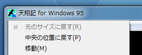
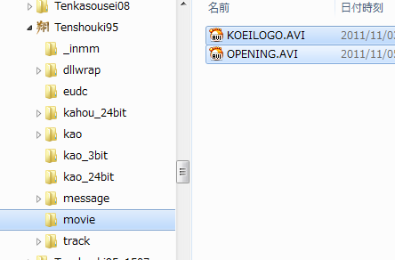
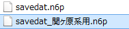
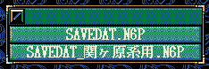

天翔記のBGMが、Vista以降ループしない、という問題を解消しています。
ゲームサイズ決定後、タイトルバーとメニューバーを隠します。
ゲーム外の情報が消えることで、ゲームへの没入感が向上します。
このオプションがONの場合、
「ウィンドウ枠の上部境界付近を左クリック」するか、もしくは、
「CTRL+M」でメニューの表示・非表示切り替えることが出来ます。
タイトルバー表示がONのオプション時において、
天翔記ウィンドウを移動させてしまったとしても、元に場所に戻せます。

元来は、マウスの左クリック＋右クリックなのですが、
これがなかなか反応しないという問題がありますので、この機能が提供されます。
天翔記のメニューから直接セーブデータエディタを起動する機能となります。
天翔記で使用されているフォントは、デフォルトではＭＳゴシックですが、これを変更する機能です。
天翔明朝、天翔PC98、ＭＳゴシック、ＭＳ明朝、等から切り替えることが可能です。
適切なビットマップフォント(16pxビットマップフォント）を持つフォントであれば何でも自由に指定できますが、
フォント名が長すぎるとメモリ破壊を起こすので注意してください。
天翔明朝フォントはコチラ
天翔記のムービーを変更したいと思った場合は、この機能を使うと便利です。

天翔記をインストールしたフォルダに｢Movie｣というフォルダを作り、そこにムービーをコピーすればそこから再生されます。
CD内のムービー名と同じムービーファイルが、Movieフォルダに存在すれば、そちらを優勢して再生します。
存在しないものは、CDの方が再生されます。
天翔記のゲーム終了時に出てくる「ロゴ」を、ムービーに差し替えます。
movieフォルダの中に「ENDLOGO.AVI」という名前のムービーを追加すると自動的に差し替わります。
シナリオ専用のオープニングムービーを追加する機能となります。
天翔記をインストールしたフォルダに｢Movie｣というフォルダを作り、そこにムービーを入れると再生されます。
再生されるタイミングは、
シナリオを決定し、大名等の選択画面を経て、環境設定を決定した後、画面が一瞬暗くなるタイミング。メインゲームが始まる前」
です。
以下の３つのグループに分かれおり、最大で３回再生することが可能です。
選択シナリオメインムービー。
シナリオ1なら、SN1_OPENING.AVI、シナリオ6なら、SN6_OPENING.AVIが再生されます。
選択シナリオランダムムービー。
シナリオ1を選択している時ならば、SN1_RANDOM*******.AVI
シナリオ5を選択している時ならば、SN5_RANDOM*******.AVI
といったパターンに当てはまるムービーから ランダムで１つ再生されます。
｢*******｣の部分は文字数は問いません。
｢*******｣部分には、半角英数字とアンダーバー、日本語等を利用することができます。
シナリオ共通ランダムムービー。
選択しているシナリオに関わらず、ランダムで再生可能なムービー。
SN_RANDOM*******.AVI
といったパターンに当てはまるムービーから ランダムで１つ再生されます。
｢*******｣の部分は文字数は問いません。
｢*******｣部分には、半角英数字とアンダーバー、日本語等を利用することができます。
なお、ムービースキップのマウス押しですが、マウスボタンをほんの少し長め(0.3秒程度で)押すと、一気に全てスキップします。
天翔記のセーブやロードをする度に音が途切れてしまっていましたが、途切れないように変更しました。
天翔記では本丸占拠時に勝ち鬨が上がるはずなのですが、対応する音源がないためか勝ち鬨が上がりません。
そこで勝ち鬨があがるように修正しました。毎回ではなく３回に１度程度となります。
天翔記では火攻め音が用意されていなかったため、成功した感触が得にくいものとなっていました。
火攻めSEを鳴らすことでこの問題を解決しています。
Windows7等、高解像度のアイコン表示では48x48にしている方も多いと思います。
tenshou.exeに48x48のアイコンを含めて、自然で美しい表示を実現しています。
その他、Metro(Modern) UI風のIconが欲しい方はこちら。
(256x256,64x64,48x48,32x32,16x16のマルチアイコンです)
実行しているtenshou.exeのタイムスタンプが、2005/02/20 11:24:26と異なる場合、
これを検知し、タイムスタンプを2005/02/20 11:24:26へと矯正します。
天翔記では、起動時に必ず｢画面サイズの選択｣が必要となりますが、
TSMod.iniにてデフォルトの選択解像度を設定し、毎度の選択を不要とする機能です。
天翔記では最大解像度をより、大きな「1532x768」へと引き上げます。
但し、顔グラフィックは８色限定となります。
天翔記には元来存在しない、800*480、1024*600 といった｢画面サイズの選択｣へと切り替わる機能です。
デモモードでは、PCは一切操作せず「見ているだけ」といった状況が考えられます。
このオプションはデモモードの時だけ、スクリーンセイバーの起動を防止するオプションとなります。
(ゲーム途中で「行方を見守る」として全てのプレイヤが抜けている場合も「デモモード」とみなします)
TSModそれ自体には、インターネット接続を要する仕様はありませんが、
ScenarioMod、及び将来の特殊Modにはインターネット接続を要する機能が存在します。
これらを有効とするか否かの切替機能となります。
天翔記では元来セーブは、savedata.n6pというファイル１つで、ここに８つ保存が可能ですが、
TSModでは、このファイル以外に、savedata*****.n6pといった名前をものを９ファイル。
元のsavedat.n6pを含めて、10ファイル、総計80セーブの利用が可能です。
天翔記フォルダ(TSMod.dllと同じフォルダ)にセーブファイルを入れておくことで、セーブ時やロード時に利用できます。
以下のようにフォルダに複数のセーブデータを入れておくと…

ゲーム中このようにセーブデータファイルの選択肢が出るようになる。
(※ファイル名に「コピー」という文字が含まれているものは何かのバックアップと判断して対象とはしません)

実行時のメモリをテキストにてメモリの内容を変更可能する機能となります。
実行時のメモリをテキストにてメモリの内容を変更可能する機能となります。